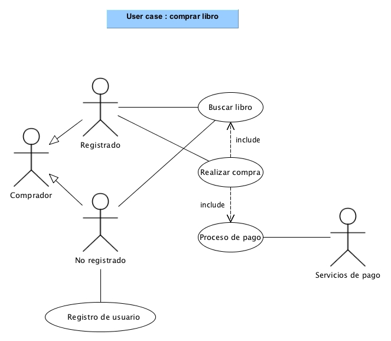
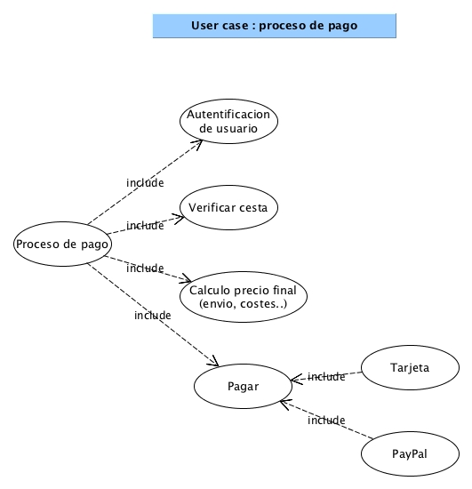
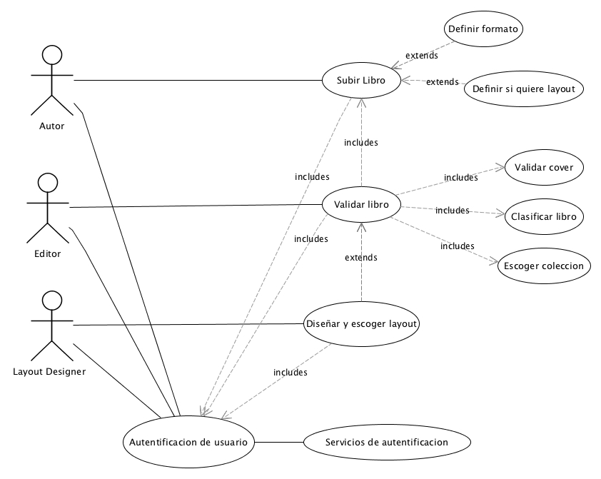

Use cases
USE CASE: Purchase book
- CONTEXTO:Un usuario/cliente quiere realizar la compra de un libro.
- ACTORES PRIMARIOS: comprador(usuario).
- ACTORES SECUNDARIOS: ----
- PRECONDICIONES:
- El usuario debe poder acceder a la web de la editorial.
- El libro tiene que estar disponible en la editorial.
- POSTCONDICIONES EXITOSAS: el usuario puede acceder a su cuenta.
- POSTOCONDIONES NO EXITOSAS:
- Que el usuario no tenga cuenta o no pueda acceder a esta.
- Que el libro no este disponible.
- BASIC FLOW:
- 1.Usuario escoge un libro.
- 2.Usuario accede a la wed de la editorial.
- 3.Usuario decide buscar libro.
- 4.Usuario pone el libro en el buscador.
- 5.Usuario accede al libro.
- 6.Usuario añade libro a la cesta.
- 7.Usuario se propone a pagar.
- 8.El sistema le pide identificacion.
- 9.El usuario introduce nombre de usuario y contraseña.
- 10.El usuario puede iniciar la compra.
- 11.El usuario escoge metodo de pago.
- 12.El usuario introduce datos bancarios.
- 13.El usuario escoge el metodo de entrega (recoger tienda o enviar).
- 14.El sistema valida la compra
- EXTENSIONES:
- 3.a El libro no esta disponible.
- 3.a.1 El usuario decide reservar el libro.
- 3.b El usuario se sale de la web de la editorial
- 4.a Pone el libro en el buscador y no lo encuentra.
- 4.a.1 Vuelves al paso 2 pero esta vez lo busca a partir de la navegacion por colecciones.
- 6.a El usuario no esta registrado como usuario.
- 6.a.1 El usuario se registra para tener una cuenta.
- 6.a.2 Vuelve al paso 5.
- 12.a Los datos de banco del usuario no son correctos.
- 12.a.1 Vuelve al paso 11, para verificar que escoge el metodo correcto.
- 12.b Los datos bancarios estan caducados.
- 12.b.1 No se puede realizar compra, se sale de la web.
- 13.a Los datos de destino del envio no son aceptado, o el servicio no esta disponible.
- 13.a.1 El usuario contacta con la editorial.
- 14.a El sistema no puede validar la compra.
- 14.a.1 Se guarda la cesta para reintentarlo.
- STAKEHOLDERS IMPLICADOS:cliente, editor, autor, layout designer, editorial, servicios de autentificacion,
servicios de pago, servicios de mensajeria, soporte tecnico, programadores(ourcode).
- ACTORES, CASOS DE USO Y SUS RELACIONES
- En el use case de comprar libro, identificamos un stakeholders principal. Tenemos el comprador que sería la generalización de un usuario registrado o no registrado. Estos dos son los stakeholders principales en el proceso de comprar un libro. Los servicios de pago serían el principal servicio externo del proceso (Actor). Al realizar la acción "realizar compra" hay dos acciones que se incluyen buscar libro y proceso de pago como parte esencial de la acción.
-
El caso proceso de pago que se incluye en realizar compra, al ser un poco extenso lo hemos separado en otro gráfico. Éste incluye autentificación de usuario, verificar cesta, calculo del precio final, y el proceso de pago. Este último con tarjeta o el servicio PayPal (Ambos son servicios externos).
- DIAGRAMA


USE CASE: Validate uploaded work
- CONTEXTO:el editor quiere validar el libro.
- ACTORES PRIMARIOS: el editor.
- ACTORES SECUNDARIOS: autor y layout designer.
- PRECONDICIONES:
- Que el autor pueda acceder a la pagina web.
- Que el libro se haya subido en el formato correcto.
- Que el editor pueda acceder a la web de la editorial.
- POSTCONDICIONES EXITOSAS:
- El autor accede a la web.
- El autor puede subir el libro.
- El autor sube el libro en el formato correcto.
- El editor puede acceder al libro.
- POSTOCONDIONES NO EXITOSAS:
- El autor no puede acceder a la web.
- El autor no logra subir el libro.
- El autor sube el libro en el formato incorrecto.
- El editor no puede acceder al libro.
- BASIC FLOW:
- 1.El autor se decide a subir el libro.
- 2.El autor accede a la web de la editorial.
- 3.El sistema pide la identificacion del usuario.
- 4.El autor introduce id y contraseña.
- 5.El autor rellena informacion del libro.
- 6.El autir define si quiere un layout propio de la editorial.
- 7.El autor define el formato en el que subira el libro.
- 8.El autor sube el libro.
- 9.El editor accede al libro.
- 10.El editor valida el layout y contenido del libro.
- 11.El editor clasifica el libro.
- 12.El editor decide a que coleccion pertenecera el libro.
- 13.El sistema añade cover y numeracionç
- 14.El sistema sube el libro en las tres versiones disponibles para el publico.
- 15.El editor se desconecta.
- EXTENSIONES
- 3.a El autor no tiene cuenta de acceso.
- 3.a.1 El autor contacta con la editorial.
- 8.a El autor sube el libro con formato erroneo.
- 8.a.1 El autor borra el o cancela la subida.
- 8.a.2 Vuelve al paso 5.
- 8.b EL autor sube el libro sin especificar que quiere un layout.
- 8.b.1 El autor cancela el libro,
- 8.b.2 Vuelve al paso 5.
- 8.c O contacta al editor para informar que quiere un layout de la editorial.
- 6. El autor define que quiere un layout.
- 6.a.1 El layout designer no puede acceder al libro.
- 6.a.2 El layout designer contacta con la editorial.
- 9.a El editor no puede acceder al libro por lo tanto no lo puede validar ni clasificar.
- 9.a.1 El editor contacta con el autor.
- 9.a.2 El editor se desconecta
- STAKEHOLDERS IMPLICADOS: editor, autor, layout designer, editorial, servicios de autentificacion, servicios de mensajeria
, soporte tecnico, programadores(ourcode).
- ACTORES, CASOS DE USO Y SUS RELACIONESEn este caso de uso tenemos un actor principal, el editor, que es quien se encarga de llevar a cabo la validacion de los libros, que es el contexto principal del caso de uso.
Luego tenemos dos actores secundarios, el autor y el layout designer, estos desempeñan acciones necesarias para la validacion de los trabajos. Estos tres actores requieren de una autentificacion de usuario para poder acceder al sistema y poder
desempeñar las acciones deseadas.
La accion "autentificacion de usuario", necesita de un agente externo, los servicios de autentificacion.
El autor realiza la accion "Subir libro", esta accion tiene acciones afiliadas pero no indispensables, las cuales son "Definir formato" y "Definir si quiere un layout", pese a esto, el mal uso de estas acciones secundarias podria generar problemas para el proceso.
El editor realiza la accion principal, "Validar libro", esta accion depende totalmente de si el autor ha realizado la accion "Subir libro", y si el diseñador a terminado el trabajo de la presentacion "Diseñar y escoger layout". La accion "Validar libro" tambien
conlleva tres acciones que debe realizar el editor para poder terminar su trabajo, que son "Validar cover", "Clasificar libro" y "Escoger coleccion".
El layout designer realiza la accion "Diseñar y escoger layout".
- DIAGRAMA

Non-functional requirements
Product
Usabilidad
- Menú debe estar ubicado en la izquierda. (Estándar de la mayoría de páginas web)
Eficiencia
- Que el proceso de compra no dure más de x tiempo.
- Que el tiempo de respuesta de una búsqueda no sea muy largo.
- La página se debe refrescar automáticamente cada cierto tiempo para actualizar información.
Robustness
- Cuantas veces se puede realizar un login antes de bloquear la cuenta
- Cuanto tiempo se puede durar realizando la compra.
Organizational
- Solo se acepta un formato específico de libros.
- Los clientes solo podrán realizar review estando registrados.
- Los autores y editores no pueden manipular libros disponibles. (unlisting)
- Solo se pueden realizar donaciones estando registrado.
- Un libro solo se puede subir una vez ha sido validado por el editor.
External
- Posibilidad de acceder desde smartphone.
- La posibilidad de responder review de otros usuarios.
- Idiomas oficiales y co-oficiales donde tenga actividad la empresa.